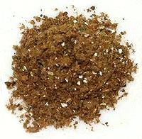

 |
Garam Masala - BiharIndia - Bihar / Jharkhand - Garam Masala | ||||
| Makes: Effort: Sched: DoAhead: |
10 T * 15 min Yes |
This recipe is from Jharkhand, but Jharkhand was part of Bihar until 2020. There is also a "Bihar Masala", but it's very different and for meats only. | |||
|
1 1/4 1 14 3 2 8 8 |
t c T in pod pod |
Nutmeg Cumin seed Pepper black Cloves Cinnamon (1) Bay Leaf Cardamom green (2) Cardamom black (3) |
Make - (15 min)
|